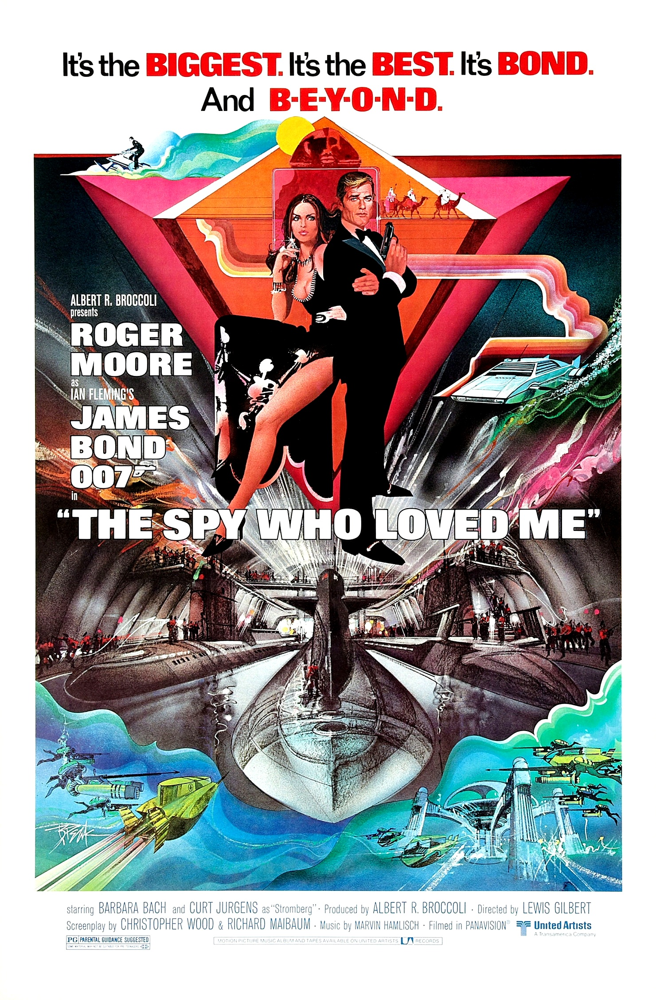

The Spy Who Loved Me
50th Academy Awards
(Oscars 1978)
3 Nominations, 0 Awards
| Nominations | ||
|---|---|---|
| Category | Nominees | Result |
| Art Direction | Hugh Scaife, Ken Adam, and Peter Lamont | Nominated |
| Music (Original Score) | Marvin Hamlisch | Nominated |
| Music (Original Song) "Nobody Does It Better" |
Carole Bayer Sager and Marvin Hamlisch | Nominated |